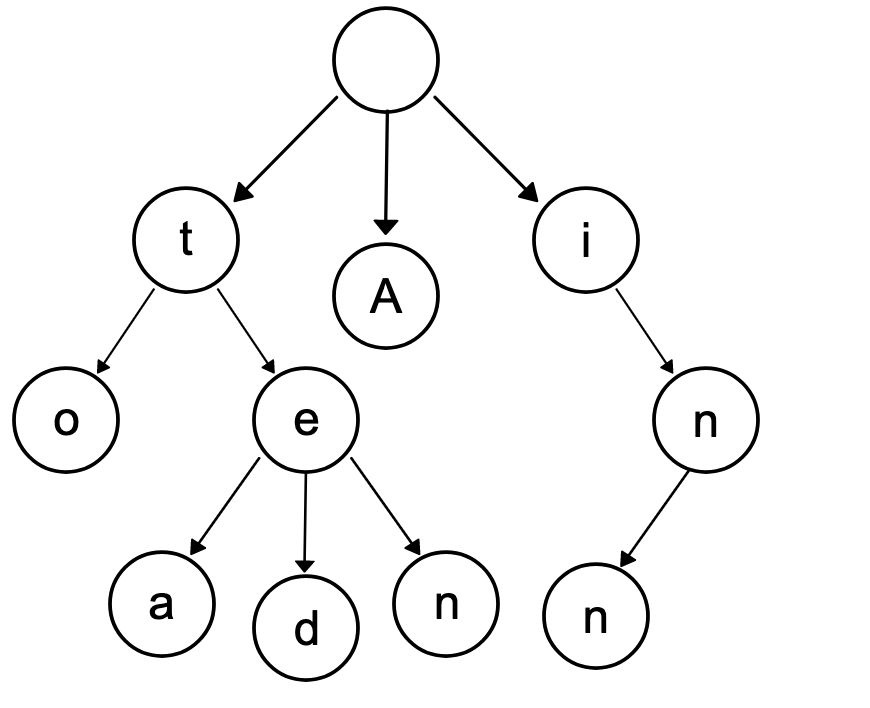

LeetCode-820-单词的压缩编码
1. 题目描述
给定一个单词列表，我们将这个列表编码成一个索引字符串S与一个索引列表A。
例如，如果这个列表是["time", "me", "bell"]，我们就可以将其表示为S = "time#bell#"和indexes = [0, 2, 5]。
对于每一个索引，我们可以通过从字符串S中索引的位置开始读取字符串，直到# 结束，来恢复我们之前的单词列表。
那么成功对给定单词列表进行编码的最小字符串长度是多少呢？1
2
3
4
5示例：
输入: words = ["time", "me", "bell"]
输出: 10
说明: S = "time#bell#" ， indexes = [0, 2, 5] 。
2. 思路
最开始，我对题目的理解是有点偏差的。我开始认为，哦，这就是要我们是判断一个字符串$STR_A$是否是另一个字符串$STR_B$的子串嘛，于是我开始就想用一个Set来存放那些已经确定在索引字符串中的单词，然后依次判断每个word，是否在Set中存在一个串，使得word是这个串的子串，当然这种情况下需要用到indexOf()函数，但其实，题意并不是这样的，我忽略了一个很重要的隐藏条件——索引列表。
在索引列表中，对每个单词，都只用了一个开始位置来作为这个单词在索引字符串中的索引，如果按照上述有点问题的理解，那每个单词的索引应该有个开头，有个结尾啊！再仔细看下题目描述，恍然大悟，题目其实是想让我们去判断，一个字符串$STR_A$是否是另一个字符串$STR_B$的后缀！
举个例子，["time", "me", "bell"]的索引字符串是time#bell#，而["time", "im", "bell"]的索引字符串是time#im#bell#，这，就是区别！
好了，既然知道是要判断后缀，就比较简单了。这里需要用到一个常用的数据结构——前缀树(Tire)，用来判断一个单词是否是已有串的前缀，从而节约存储所有串需要的空间，下图就是一个前缀树的例子(图创作于Sweetiee)，改图展示了一个保存了8个单词的字典树的结构，8个单词分别是："A", "to", "tea", "ted", "ten", "i", "in", "inn"。

于是这道题的思路也就跃然于纸上了，将所有字符串逆序构建一个前缀树（也就等效一个后缀树了），然后插入的时候：
- 如果是插了一个新的串，则加上该串的长度+1(#号的存在)；
- 如果该串是已有串的后缀，则丢掉。
当然，最开始还是要将所有的串按照从长到短的顺序排个序。
3. 代码
3.1 前缀树的实现
在前缀树中，大概会涉及到insert(), search(), 和startsWith()这三个操作,下面是一个实现的例子，是LeetCode-208实现Tire原题。1
2
3
4
5
6
7
8
9
10
11
12
13
14
15
16
17
18
19
20
21
22
23
24
25
26
27
28
29
30
31
32
33
34
35
36
37
38
39
40
41
42
43
44
45
46
47
48
49
50
51
52
53
54
55
56
57
58
59
60
61
62
63
64
65
66
67
68
69
70
71
72
73
74
75
76
77
78
79
80
81class Trie {
// 内部类
class TrieNode{
private char val;
private TrieNode[] children=new TrieNode[26]; // 可能的孩子，26个英文字母
private boolean endOfSomeWord; // 该结点是否是某个单词的结尾
public TrieNode() {
}
public TrieNode(char ch) {
val=ch;
}
}
private TrieNode root; // 根节点不存放值
/** Initialize your data structure here. */
public Trie() {
root=new TrieNode();
}
/** Inserts a word into the trie. */
public void insert(String word) {
TrieNode current=root;
for(int i=0;i<word.length();i++)
{
char c = word.charAt(i);
if(current.children[c-'a']!=null)
{
current=current.children[c-'a'];
}
else
{
current.children[c-'a']=new TrieNode(c);
current=current.children[c-'a'];
}
}
// 把当前结点的endOfSomeWord设为true
current.endOfSomeWord=true;
}
/** Returns if the word is in the trie. */
public boolean search(String word) {
// search 和 startwith 的区别是：
// search的最后一个必须是单词的结尾,而startwith不需要
TrieNode current=root;
for(int i=0;i<word.length();i++)
{
char c = word.charAt(i);
if(current.children[c-'a']==null)
return false;
current=current.children[c-'a'];
}
// 判断是否是单词的结尾
return current.endOfSomeWord;
}
/** Returns if there is any word in the trie that starts with the given prefix. */
public boolean startsWith(String prefix) {
TrieNode current=root;
for(int i=0;i<prefix.length();i++)
{
char c = prefix.charAt(i);
if(current.children[c-'a']==null)
return false;
current=current.children[c-'a'];
}
return true;
}
public static void main(String[] args) {
Trie trie = new Trie();
trie.insert("apple");
trie.search("apple"); // 返回 true
trie.search("app"); // 返回 false
trie.startsWith("app"); // 返回 true
trie.insert("app");
trie.search("app"); // 返回 true
}
3.2 单词的压缩编码实现
在本题中，我们只需要用到insert()操作，并让该方法返回一个int值，指示的是插入一个串时，需要在索引字符串中增长的长度。1
2
3
4
5
6
7
8
9
10
11
12
13
14
15
16
17
18
19
20
21
22
23
24
25
26
27
28
29
30
31
32
33
34
35
36
37
38
39
40
41
42
43
44
45
46
47
48
49
50
51
52
53
54
55
56
57
58
59class Solution {
public int minimumLengthEncoding(String[] words) {
// 将字符串数组按从长到短排序
Arrays.sort(words, (o1, o2) -> o2.length() - o1.length());
// 将每个字符串插入后缀树（实质上就是前缀树）
int res = 0;
Trie trie = new Trie();
for (String word : words) {
res += trie.insert(word);
}
return res;
}
}
// 前缀树（对于本题来说，需要的是后缀树，其实可以将字符串逆序插入）
class Trie {
private TrieNode root; // 根节点不存放值
public Trie() {
root = new TrieNode();
}
// 插入一个新单词，返回列表编码需要新增的长度
public int insert(String word) {
TrieNode current = root;
boolean isNew = false; // 是否word是一个新的串
for (int i = word.length() - 1; i >= 0; i--) {
char c = word.charAt(i);
if (current.children[c - 'a'] != null) {
current = current.children[c - 'a'];
} else {
isNew = true;
current.children[c - 'a'] = new TrieNode(c);
current = current.children[c - 'a'];
}
}
// 新串#
return isNew ? word.length() + 1 : 0;
}
}
// 前缀树结点
class TrieNode {
char val;
TrieNode[] children = new TrieNode[26]; // 可能的孩子，26个英文字母
TrieNode() {
}
TrieNode(char ch) {
val = ch;
}
}